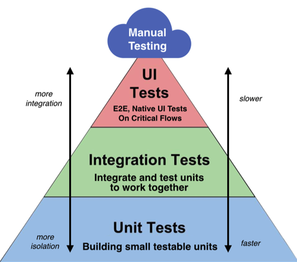

유닛 테스트에 대한 생각
유닛 테스트에 대한 생각
Created: 2022년 11월 21일 오전 10:24 Tags: NotUploaded, iOS
회사의 개발 문화에 따라 유닛 테스트를 강제하는 경우도 있고, 필요에 따라 직접 작성하는 경우도 있습니다. 최근 주니어 개발자 지인들로부터 유닛 테스트에 대한 질문을 많이 받았는데, 개인적으로 생각하는 바를 더해보려 합니다. 이것은 정답이 아닙니다.
유닛 테스트란?
먼저, 유닛 테스트란 무엇일까요? 유닛 테스트는 사전적으로 함수를 테스트하는 가장 작은 단위의 기본 테스트로, 독립적이면서 빠른 테스트를 지향합니다. 모든 키워드가 중요합니다. 그러나 많은 문서에서는 너무 함축적으로 설명하는 경향이 있어서, 저는 개인적인 생각을 포함하여 좀 더 자세하게 설명하고자 합니다.

가장 작은 단위의 기본 테스트
첫째로, 가장 작은 단위의 기본 테스트라는 말을 주목해야 합니다. 유닛 테스트를 작성한 경험이 없는 친구들에게 어디까지 테스트를 작성해야 하는지에 대한 이야기를 많이 들었습니다. 생각해보니 이 부분에서 감을 못 잡는 이유는 검색하면 나오는 유닛 테스트의 샘플 코드에 있는 것 같습니다. 주로 샘플 코드를 보면 1 + 1이 2인지 테스트하는 샘플을 많이 보여줍니다. 이는 유닛 테스트 작성에 대해 설명하기에 적합하지만, 과연 어디까지 유닛 테스트를 작성해야 하는지에 대한 답은 되지 않는 것 같습니다.
모든 함수에 대해서 유닛 테스트를 작성할 필요는 없습니다. ‘클린 아키텍처’라는 책을 보면 유닛 테스트는 해당 함수에 문제가 있음을 발견할 수 있지만, 문제가 없음을 보장할 수 없다는 이야기가 있습니다. 만약 내가 생각할 수 있는 모든 케이스에 대해서 테스트를 작성했다고 해도, 내가 예상할 수 없는 엣지 케이스가 있을 수도 있습니다.
예를 들어서 휴대폰번호 검증 함수를 만든다고 가정해보겠습니다. 아래와 기획으로부터 아래와 같은 경우를 충족하지 못하면 버튼을 disable 하라는 요구사항을 들어서 휴대폰 번호 검증 함수를 만든다면 이런식으로 만들 수 있을 것 같습니다.
- 10자 이상
- 숫자로만 구성될 것
func validate(phoneNumber text: String) -> Bool {
let minSize = 10
guard text.count >= minSize else { return false }
let pattern = "^[0-9]{\(minSize),}$"
guard let patternRegex = try? NSRegularExpression(pattern: pattern, options: .caseInsensitive) else { return false }
return patternRegex.firstMatch(in: text, options: [], range: NSRange(location: 0, length: text.count)) != nil
}
그리고 이에 대해서 몇가지 테스트 코드를 작성할 수 있습니다. 요구사항을 충족하면서 예상할 수 있는 경우에 대해 테스트 케이스를 작성할 수 있습니다.
(함수명을 한글로 하는 회사도 있고 영어로 하는 회사도 있는데, 여기선 편의상 한글로 하겠습니다.)
func test_휴대폰번호_숫자가아닌경우() {
let result = validate(phoneNumber: "leejigun-leejigun-leejigun")
let expect = false
assert(result == expect)
}
func test_휴대폰번호_10자이하인경우() {
let result = validate(phoneNumber: "010123412")
let expect = false
assert(result == expect)
}
func test_휴대폰번호_10자인경우() {
let result = validate(phoneNumber: "0101234123")
let expect = true
assert(result == expect)
}
func test_휴대폰번호_10자이상인경우() {
let result = validate(phoneNumber: "01012341234")
let expect = true
assert(result == expect)
}
그런데, 사용자가 그냥 1로 도배를 하고 넘어가는 경우가 많아, 앞자리가 010, 011, 016 ~ 019 인 경우에만 유효하게 해달라는 요구사항이 추가된다고 가정해보겠습니다. 이 경우 기존 validate 함수를 수정하고 해당 케이스에 대한 테스트 코드를 추가하면 됩니다.
만약, 이 함수가 매우 복잡하다면 해당 함수를 수정하며 걱정이 될 수 있습니다. 예를 들어서 다른 개발자가 이 함수를 수정해야 하는데, 함수에 정규식으로 10자를 판단하고 이 부분이 부담스러울 수 있습니다. 혹은 내가 짠 코드지만 인터넷에서 긁어온 코드라 수정했을 때 문제가 없을 지 부담스러울 수 있는데, 이 때 기존에 짜둔 테스트 코드가 아주 든든할 것입니다.
그렇기 때문에 내가 엣지 케이스를 예상할 수 있는 가장 작은 부분부터 테스트 코드를 작성하는게 좋습니다. 거대한 시스템의 테스트 코드 작성은 과도하게 많은 경우의 수가 있고 하위 함수의 변경에 따라서 자주 변경 될 수 있기 때문에 쉽지 않습니다. 작은 함수부터 시작해 점점 큰 함수의 테스트 코드를 작성하는게 좋습니다.
독립적이고 빠른 테스트를 지향한다.
다음으로 독립적이고 빠른 테스트에 대해서 이야기해 보려 합니다. 통일한 케이스에 대해서 테스트를 실행할 때마다 결과가 달라진다면 테스트의 의미가 있을까요? 앞서 가장 작은 부분에 대해서 테스트를 해야 한다는 것과 어느 정도 관계 있는 이야기인데, 비교적 큰 규모의 함수에 대해서 테스트 코드를 작성해야 할 경우가 있습니다. 이 함수는 앞서 작성한 작은 기능의 함수들에 비해 비교적 규모가 크기 때문에 이벤트 로깅이나 API 통신이 필요할 수 있습니다.
이 함수의 예상하는 테스트 코드를 작성해도 네트워크 환경, 배포 타이밍 등 외부 환경에 의해 실행할 때마다 결과가 달라질 수 있습니다. 그러면 왜 실패했는지 분석하려 할 것이고, 또 다시 돌려봤더니 성공하면 아주 혼란스러울 겁니다.
그래서 테스트 작성은 독립적이어야 합니다. 테스트를 독립적으로 만드는 방법은 2가지가 있습니다.
첫째로 기존 함수를 작게 쪼개 테스트가 필요한 부분에 대해 별도의 함수를 만드는 방법입니다. 네트워크 통신이 필요한 부분과 필요 없는 부분을 분리하고 필요 없는 부분에 대해서 테스트 코드를 작성하면 네트워크 환경에 독립적인 테스트가 가능합니다.
둘째로 mock이나 stub를 만들어 주입하는 방법이 있습니다. 제가 클린 아키텍처를 처음으로 접하고 필요성을 깨달은 계기입니다. 첫번째 방법으로 기존 코드를 수정하는 건 경우에 따라 큰 부담이 될 수 있습니다. 이럴 때 외부 디펜던시를 가지는 부분을 따로 묶어서 주입 받도록 수정하고 테스트 코드에서는 mock이나 stub를 만들어 주입하면 큰 부담없이 최소한의 수정으로 테스트 코드를 추가할 수 있습니다.
이렇게 두번째 방법으로 테스트 코드를 추가하면 리펙토링을 통해 해당 함수를 작게 분리하거나 수정하는데 큰 도움이 됩니다.
class TestAble {
let apiUseCase: APIUseCase
init(apiUseCase: APIUseCase = APIUseCaseImp()) {
self.apiUseCase = aipUseCase
}
func gettingBooking() -> [Booking] {
let data = apiUseCase.getBookings()
...
return bookings
}
}
...
func test() {
let test = TestAble(apiUseCase: APIUseCaseStub())
let result = test.gettingBooking().isEmpty
let expect = false
assert(result == expect)
}